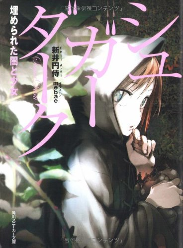

Sugar Dark - シュガーダーク 埋められた闇と少女

Picked this up after I randomly saw a couple of people comparing it to Akiyama… And the comparasion isn’t too far strechted actually. The text is in 3rd person actually reminiscent of iriya and the fact that it is a hardcore セカイ系 work also helps to make the connection.
The story starts with the protagonist being sended to work as a grave digger as part of is life imprisonment sentence. Soon enough he mets with Melia, a very 不思議 girl which proclaims herself as the grave keeper of that cementery, he basically falls for her since the start. Not much after that he also realizes that what’s being buried are not humans…
If you are familiar with セカイ系 mechanics you can pretty much see how the story will unfold, it basically has every familiar trait of it and it’s great, the main difference than instead of being sci-fi it is more fantasy but doesn’t really have time to go in depth about it’s world, it rather focuses in the protagonist psyche and the relationship with Melia. The atmosphere in general is very creepy and negative, the fear the protagonist has while discovering what’s up with that place is very achieved, the text in general is kind of good.
I had a good time reading it the problem with the book is that it’s just that, finished it a few weeks ago and already kinda forgot about it, could also be my bad memory… Judging by the atogaki the author had plans to make at least a second volume, and I feel it could had gone places but it was never released. At least it ends on a very good note. Definetly would recommend to people that love ボーイ・ミーツ・ガール and/or セカイ系 in general.